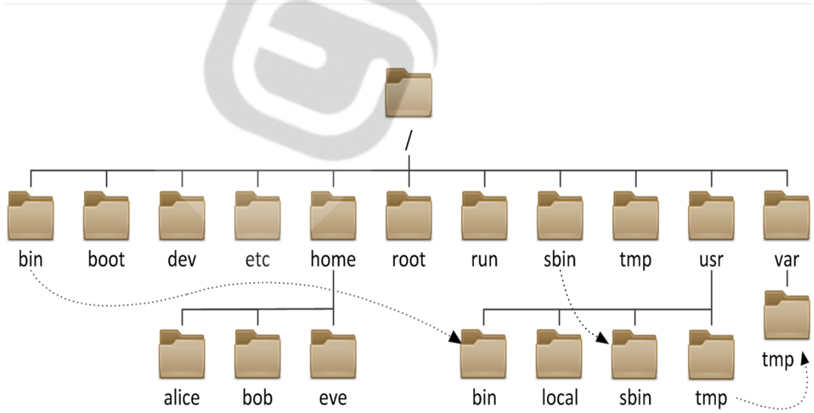
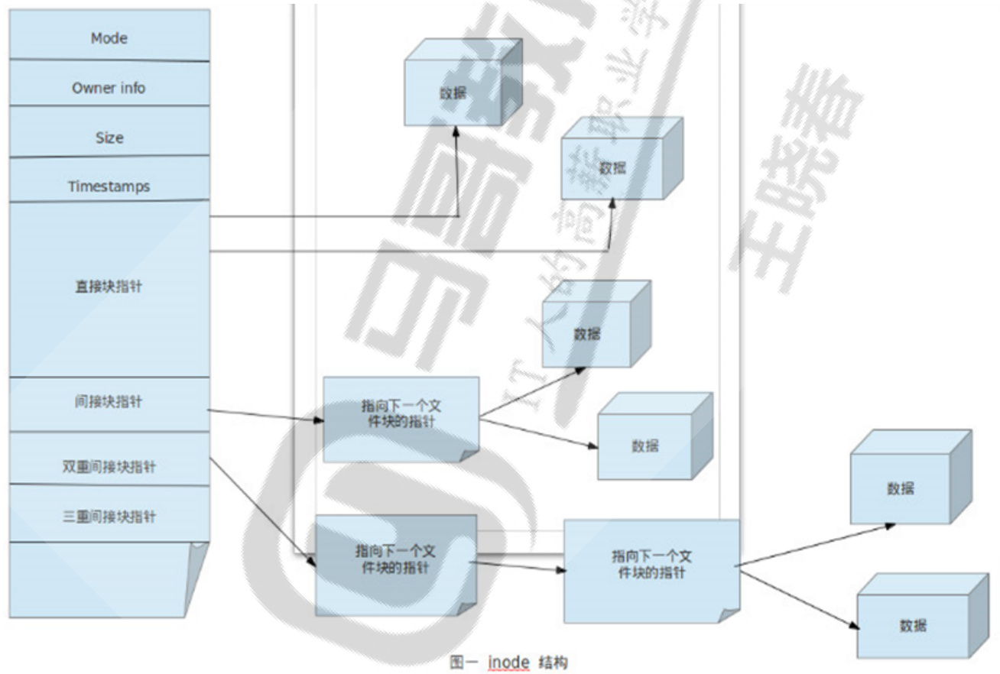
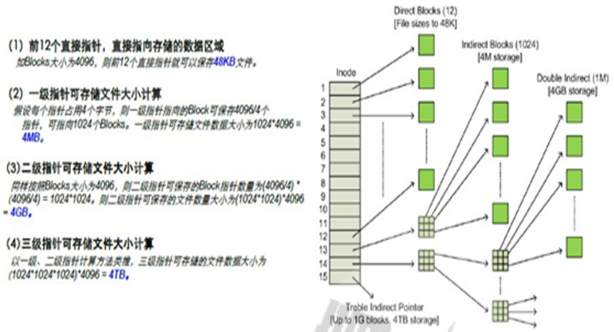
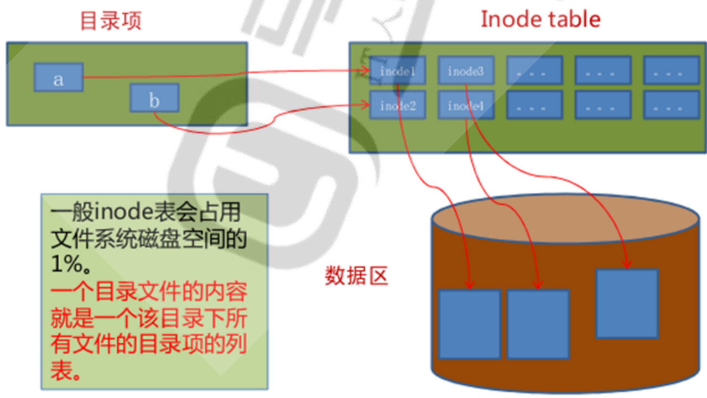
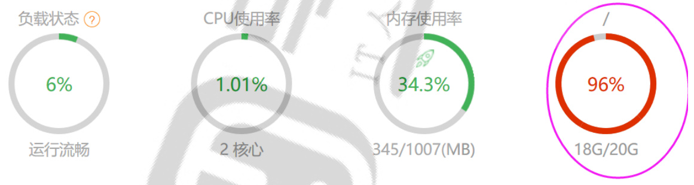
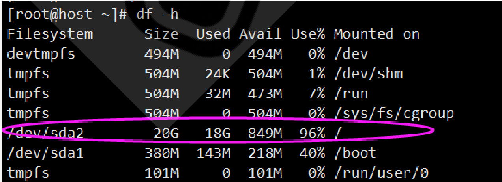

文件管理和IO重定向¶
讲师：王晓春
文件管理和IO重定向¶
内容概述¶
1 文件系统目录结构¶
1.1 文件系统的目录结构 1.2 常见的文件系统目录功能 1.3 应用程序的组成部分 1.4 CentOS 7 以后版本目录结构变化 1.5 Linux下的文件类型
2 文件操作命令¶
2.1 显示当前工作目录 2.2 绝对和相对路径 2.3 更改目录 2.4 列出目录内容 2.5 查看文件状态 stat 2.6 确定文件内容 2.7 文件通配符模式 wildcard pattern 2.8 创建空文件和刷新时间 2.9 复制文件和目录 2.10 移动和重命名文件 2.11 删除文件 2.12 目录操作 2.12.1 显示目录树 tree 2.12.2 创建目录 mkdir 2.11.3 删除空目录 rmdir
3 文件元数据和节点表结构¶
3.1 inode 表结构 3.2 硬（hard）链接 3.3 符号 symbolic （或软 soft）链接 3.4 硬链接和软链接区别总结 3.5 生产案例3.5.1 案例1：提示空间满 No space left on device，但 df 可以看到空间很多，为什么？3.5.2 案例2：提示空间快满，使用 $\mathsf{r m}$ 删除了很大的无用文件后，df 仍然看到空间不足，为什么？如何解决？
4 IO 重定向和管道¶
4.1 标准输入和输出 4.2 I/O重定向 redirect
4.2.1 标准输出和错误重新定向¶
4.2.2 标准输入重定向4.2.2.1 tr 命令4.2.2.2 标准输入重定向4.2.2.3 把多行重定向
4.3 管道¶
4.3.1 管道4.3.2 tee 命令4.4 重定向中的 - 符号4.5 练习
文件管理和IO重定向¶
内容概述¶
文件系统目录结构 创建和查看文件 复制、转移和删除文件 软和硬链接 IO 重定向和管道
1 文件系统目录结构¶

1.1 文件系统的目录结构¶
文件和目录被组织成一个单根倒置树结构文件系统从根目录下开始，用“/”表示
根文件系统(rootfs)：root filesystem 标准Linux文件系统（如：ext4），文件名称大小写敏感，例如：MAIL, Mail, mail, mAiL 以 . 开头的文件为隐藏文件 路径分隔的 / 文件名最长255个字节 包括路径在内文件名称最长4095个字节 蓝色- $..>$ 目录 绿色- $..>^{\ln}$ 可执行文件 红色- $..>$ 压缩文件 浅蓝色- $..>$ 链接文件 灰色- $..>$ 其他文件 除了斜杠和NUL,所有字符都有效.但使用特殊字符的目录名和文件不推荐使用，有些字符需要用引号来引用 每个文件都有两类相关数据：元数据：metadata，即属性， 数据：data，即文件内容
Linux的文件系统分层结构：FHS Filesystem Hierarchy Standard参考文档：http://www.pathname.com/fhs/
1.2 常见的文件系统目录功能¶
/boot：引导文件存放目录，内核文件(vmlinuz)、引导加载器(bootloader, grub)都存放于此目录 /bin：所有用户使用的基本命令；不能关联至独立分区，OS启动即会用到的程序 /sbin：管理类的基本命令；不能关联至独立分区，OS启动即会用到的程序 /lib：启动时程序依赖的基本共享库文件以及内核模块文件(/lib/modules) /hrmdoenemodtvbceti：:/a：临设U：管bcS时备便lhE理oaR文携crN员件kaA式 $\cdot{\times86}_{-}64$ v点件用，挂i存户随c载e储家机点，位目访线置录问性访问 /home/USERNAME：普通用户家目录 /media：便携式移动设备挂载点 /mnt：临时文件系统挂载点 /dev：设备文件及特殊文件存储位置devicecter de /opt：第三方应用程序的安装位置 /srv：系统上运行的服务用到的数据 /tmp：临时文件存储位置 /usr: universal shared, read-only databin: 保证系统拥有完整功能而提供的应用程序sbin:lib：32位使用lib64：只存在64位系统include: C程序的头文件(header files)share：结构化独立的数据，例如doc, man等local：第三方应用程序的安装位置bin, sbin, lib, lib64, etc, share /var: variable data filescache: 应用程序缓存数据目录lib: 应用程序状态信息数据local：专用于为/usr/local下的应用程序存储lock: 锁文件log: 日志目录及文件opt: 专用于为/opt下的应用程序存储可变数据run: 运行中的进程相关数据,通常用于存储进程pid文件spool: 应用程序数据池tmp: 保存系统两次重启之间产生的临时数据 /proc: 用于输出内核与进程信息相关的虚拟文件系统 /sys：用于输出当前系统上硬件设备相关信息虚拟文件系统 /selinux: security enhanced Linux，selinux相关的安全策略等信息的存储位置
1.3 应用程序的组成部分¶
二进制程序：/bin, /sbin, /usr/bin, /usr/sbin, /usr/local/bin, /usr/local/sbin 库文件：/lib, /lib64, /usr/lib, /usr/lib64, /usr/local/lib, /usr/local/lib64 配置文件：/etc, /etc/DIRECTORY, /usr/local/etc 帮助文件：/usr/share/man, /usr/share/doc, /usr/local/share/man,/usr/local/share/doc
1.4 CentOS 7 以后版本目录结构变化¶
/bin 和 /usr/bin/sbin 和 /usr/sbin/lib 和/usr/lib/lib64 和 /usr/lib64
范例：¶
[root@centos8 ~]#ls /bin /sbin /lib /lib64 -ld lrwxrwxrwx. 1 root root 7 May 11 2019 /bin -> usr/bin lrwxrwxrwx. 1 root root 7 May 11 2019 /lib -> usr/lib lrwxrwxrwx. 1 root root 9 May 11 2019 /lib64 -> usr/lib64 lrwxrwxrwx. 1 root root 8 May 11 2019 /sbin -> usr/sbin [root@centos6 ~]#ls /bin /sbin /lib /lib64 -ld dr-xr-xr-x. 2 root root 4096 Mar 20 09:14 /bin dr-xr-xr-x. 11 root root 4096 Dec 12 2018 /lib dr-xr-xr-x. 9 root root 12288 Mar 20 09:13 /lib64 dr-xr-xr-x. 2 root root 12288 Mar 20 09:14 /sbin [root@ubuntu1804 ~]#ll /bin /usr/bin -d drwxr-xr-x 2 root root 4096 Jan 12 18:41 /bin/ drwxr-xr-x 2 root root 24576 Jan 12 18:42 /usr/bin/
1.5 Linux下的文件类型¶
普通文件 d 目录文件directory符号链接文件link b 块设备block c 字符设备character p 管道文件pipe s 套接字文件socket
范例：
[root@centos7 ~]#ls -l /run/ total 52 drwxr-xr-x 2 root root 100 Dec 9 20:41 abrt -rw-- 1 root root 11 Dec 9 20:41 alsactl.pid -rw-r--r-- 1 root root 5 Dec 9 20:41 atd.pid -rw-r--r-- 1 root root 4 Dec 9 20:41 auditd.pid
prw-- 1 root root 0 Dec 9 20:41 autofs.fifo-misc prw-- 1 root root 0 Dec 9 20:41 autofs.fifo-net drwxr-xr-x 2 avahi avahi 80 Dec 9 20:41 avahi-daemon drwxr-xr-x 2 root root 40 Dec 9 20:41 certmonger drwxr-x--- 2 chrony chrony 80 Dec 9 20:41 chrony drwxr-xr-x 2 root root 40 Dec 9 20:41 console -rw-r--r-- 1 root root 5 Dec 9 20:41 crond.pid 1 root root 0 Dec 9 20:41 cron.reboot drwx-- 2 root root 40 Dec 9 20:41 cryptsetup drwxr-xr-x 3 root lp 80 Dec 9 20:41 cups drwxr-xr-x 2 root root 60 Dec 9 20:41 dbus -rw-r--r-- 1 root root 4 Dec 9 20:41 dhclient-eth0.pid prw-- 1 root root 0 Dec 9 20:40 dmeventd-client prw-- 1 root root 0 Dec 9 20:40 dmeventd-server drwxr-xr-x 2 root root 40 Dec 9 20:41 faillock -rw- 1 root root 4 Dec 9 20:41 gssproxy.pid srw-rw-rw- 1 root root 0 Dec 9 20:41 gssproxy.sock drwxr-xr-x 4 root root 100 Dec 9 20:40 initramfs -rw-r--r-- 1 root root 4 Dec 9 20:41 ksmtune.pid drwxr-xr-x 8 root root 220 Dec 9 20:41 lock drwxr-xr-x 3 root root 60 Dec 9 20:40 log drwxrwxr-x 3 root libstoragemgmt 60 Dec 9 20:41 lsm drwx-- 2 root root 80 Dec 9 20:40 lvm -rw-r--r-- 1 root root 4 Dec 9 20:40 lvmetad.pid drwx--x--- 2 root root 40 Dec 9 20:41 mdadm drwxr-xr-x 2 root root 40 Dec 9 20:40 mount drwxrwxr-x 2 root root 40 Dec 9 20:41 netreport drwxr-xr-x 3 root root 120 Dec 9 20:41 NetworkManager drwxr-xr-x 2 root root 40 Dec 9 20:41 plymouth drwxr-xr-x 2 root root 40 Dec 9 20:41 ppp drwxr-xr-x 2 radvd radvd 40 Dec 9 20:41 radvd drwx-- 2 rpc rpc 40 Dec 9 20:41 rpcbind -r--r--r-- 1 root root 0 Dec 9 20:41 rpcbind.lock srw-rw-rw- 1 root root 0 Dec 9 20:41 rpcbind.sock -rw-r--r-- 1 rpcuser rpcuser 5 Dec 9 20:41 rpc.statd.pid
2 文件操作命令¶
2.1 显示当前工作目录¶
每个shell和系统进程都有一个当前的工作目录 CWD：current work directory
显示当前shell CWD的绝对路径 pwd命令: printing working directory
-P 显示真实物理路径-L 显示链接路径（默认）
范例：¶
[root@centos8 ~]#pwd /root [root@centos8 ~]#cd /data [root@centos8 data]#pwd
/data [14:38:41 root@centos8 sysconfig]#cd /bin [14:38:52 root@centos8 bin]#pwd /bin [14:38:54 root@centos8 bin]#ll / total 28 lrwxrwxrwx. 1 root root 7 May 11 2019 bin $\mathrel{-}>$ usr/bin dr-xr-xr-x. 6 root root 4096 Dec 11 11:21 boot drwxr-xr-x. 2 root root 142 Dec 13 14:26 data drwxr-xr-x. 19 root root 3280 Dec 13 11:21 dev drwxr-xr-x. 142 root root 8192 Dec 13 14:26 etc drwxr-xr-x. 3 root root 18 Dec 11 11:19 home lrwxrwxrwx. 1 root root 7 May 11 2019 lib -> usr/lib lrwxrwxrwx. 1 root root 9 May 11 2019 lib64 -> usr/lib64 drwxr-xr-x. 2 root root 6 May 11 2019 media drwxr-xr-x. 3 root root 18 Dec 11 11:15 mnt drwxr-xr-x. 2 root root 6 May 11 2019 opt dr-xr-xr-x. 259 root root 0 Dec 13 10:34 proc dr-xr-x---. 15 root root 4096 Dec 13 14:26 root drwxr-xr-x. 42 root root 1200 Dec 13 11:03 run lrwxrwxrwx. 1 root root 8 May 11 2019 sbin -> usr/sbin drwxr-xr-x. 2 root root 6 May 11 2019 srv dr-xr-xr-x. 13 root root 0 Dec 13 10:34 sys drwxrwxrwt. 20 root root 4096 Dec 13 14:14 tmp drwxr-xr-x. 12 root root 144 Dec 11 11:12 usr drwxr-xr-x. 22 root root 4096 Dec 11 11:21 var [14:38:57 root@centos8 bin]#pwd /usr/bin
2.2 绝对和相对路径¶
绝对路径以正斜杠/ 即根目录开始完整的文件的位置路径可用于任何想指定一个文件名的时候 相对路径名 不以斜线开始 一般情况下，是指相对于当前工作目录的路径，特殊场景下，是相对于某目录的位置 可以作为一个简短的形式指定一个文件名
基名：basename，只取文件名而不要路径目录名：dirname，只取路径，不要文件名
范例:
[root@centos8 bin]#basename /etc/sysconfig/network network [root@centos8 bin]#dirname /etc/sysconfig/network /etc/sysconfig [root@centos8 ~]#dirname /etc/sysconfig/network-scripts/ifcfg-eth0 /etc/sysconfig/network-scripts [root@centos8 ~]#basename /etc/sysconfig/network-scripts/ifcfg-eth0 ifcfg-eth0
2.3 更改目录¶
命令 cd ： change directory 改变目录
选项：-P 切换至物理路径，而非软链接目录
可以使用绝对或相对路径
切换至父目录： cd ..切换至当前用户主目录： cd切换至以前的工作目录： cd -
范例：¶
[root@centos8 ~]#cd /etc/sysconfig [root@centos8 sysconfig]#pwd /etc/sysconfig [root@centos8 sysconfig]#cd ../../data [root@centos8 data]#pwd /data [root@centos8 data]#cd /bin [root@centos8 bin]#pwd /bin [root@centos8 bin]#cd -P /bin [root@centos8 bin]#pwd /usr/bin
相关的环境变量：
PWD：当前目录路径OLDPWD：上一次目录路径
范例：¶
[root@centos8 ~]#echo \$OLDPWD /etc/sysconfig [root@centos8 ~]#cd - /etc/sysconfig [root@centos8 sysconfig]#pwd /etc/sysconfig [root@centos8 sysconfig]#
2.4 列出目录内容¶
ls 命令可以列出当前目录的内容或指定目录
用法：¶
ls [options] [files_or_dirs]¶
常见选项：¶
-a 包含隐藏文件-l 显示额外的信息-R 目录递归-ld 目录和符号链接信息-1 文件分行显示-S 按从大到小排序-t 按mtime排序-u 配合-t选项，显示并按atime从新到旧排序-U 按目录存放顺序显示-X 按文件后缀排序 -F 对不同类型文件显示时附加不同的符号： $\star1=>\textcircled{\alpha}$ -C 文件多时，以多列的方式显示文件，默认是一列（标准输出）
说明：¶
ls 查看不同后缀文件时的颜色由 /etc/DIR_COLORS 和@LS_COLORS变量定义ls -l 看到文件的大小,不一定是实际文件真正占用空间的大小
范例：¶
[root@centos8 ~]#vim /etc/DIR_COLORS .jpg 01;31 #修改此行 [root@centos8 ~]#exit [root@centos8 ~]#echo \$LS_COLORS $\scriptstyle\mathbf{r}\leq=0$ :di $_{=01}$ ;34:ln=01;36:mh $\scriptstyle1=00$ :pi $\scriptstyle=40$ ;33:so=01;35:do=01;35:bd=40;33;01:cd=40;33;01: or=40;31;01:mi $=$ 01;05;37;41:su=37;41:sg=30;43:ca=30;41:tw=30;42:ow=34;42:st=37;44 :ex=01;32:*.tar=01;31:*.tgz $:=$ 01;31:*.arc=01;31:*.arj=01;31:*.taz=01;31:*.lha=01;3 1:*.lz4=01;31:*.lzh=01;31:*.lzma $\vDash$ 01;31:*.tlz=01;31:*.txz=01;31:*.tzo=01;31:*.t7z =01;31:*.zip=01;31:*. $z{=}01$ ;31:*.dz=01;31:*.gz=01;31:*.lrz=01;31:*. $\scriptstyle{\mathsf{l}}z=01$ ;31:*.lzo= 01;31:*. $\scriptstyle\mathbf{\boldsymbol{x}}2=01$ ;31:*.zst=01;31:*.tzst=01;31:*.bz2=01;31:*.bz=01;31:*.tb $\scriptstyle z=01$ ;31:*.t bz2=01;31:*.tz=01;31:*.deb=01;31:*.rpm=01;31:*.jar=01;31:*.war=01;31:*.ear=01;31 :*.sar=01;31:*.rar=01;31:*.alz=01;31:*.ace=01;31:*.zoo=01;31:*.cpio=01;31:*.7z=0 1;31:*.rz=01;31:*.cab=01;31:*.wim=01;31:*.swm=01;31:*.dwm=01;31:*.esd=01;31:*.jp g=01;31:*.jpeg=01;35:*.mjpg=01;35:*.mjpeg=01;35:*.gif=01;35:*.bmp $\vDash$ 01;35:*.pbm=01 ;35:*.pgm=01;35:*.ppm=01;35:*.tga=01;35:*.xbm=01;35:*.xpm=01;35:*.tif=01;35:*.ti ff=01;35:*.png=01;35:*.svg=01;35:*.svgz=01;35:*.mng=01;35:*.pcx=01;35:*.mov=01;3 5:*.mpg=01;35:*.mpeg=01;35:*.m2v=01;35:*.mkv=01;35:*.webm=01;35:*.ogm=01;35:*.mp 4=01;35:*.m4v=01;35:*.mp4v=01;35:*.vob=01;35:*.qt=01;35:*.nuv=01;35:*.wmv=01;35: *.asf=01;35:*.rm=01;35:*.rmvb=01;35:*.flc=01;35:*.avi=01;35:*.fli=01;35:*.fl $\scriptstyle\mathsf{v}=01$ ;35:*.gl=01;35:*.dl=01;35:*.xcf=01;35:*.xwd=01;35:*.yuv=01;35:*.cgm=01;35:*.emf= 01;35:*.ogv=01;35:*.ogx=01;35:*.aac=01;36:*.au=01;36:*.flac=01;36:*.m4a $\c=$ 01;36:*. mid=01;36:*.midi $\scriptstyle=01$ ;36:*.mka=01;36:*.mp3=01;36:*.mpc=01;36:*.ogg=01;36:*.ra=01;3 6:*.wav $\scriptstyle=01$ ;36:*.oga=01;36:*.opus=01;36:*.spx=01;36:*.xspf=01;36:
范例：别名ll
[root@centos8 ~]#alias ll alias ll='ls -l --color $\mathbf{\bar{\rho}}=\mathbf{\bar{\rho}}$ auto' [root@ubuntu ~]#alias ll alias $17=^{\prime}15$ -alF'
2.5 查看文件状态 stat¶
文件相关信息：metadata, data每个文件有三个时间戳：
access time 访问时间，atime，读取文件内容modify time 修改时间，mtime，改变文件内容（数据）change time 改变时间，ctime，元数据发生改变
[root@centos8 ~]#stat /etc/passwd
File: /etc/passwd Size: 1306 Blocks: 8 IO Block: 4096 regular file Device: 802h/2050d Inode: 134792556 Links: 1 Access: (0644/-rw-r--r--) Uid: ( 0/ root) Gid: ( 0/ root) Access: 2019-12-09 20:37:12.830991350 +0800 Modify: 2019-12-09 20:37:12.826991351 $+0800$ Change: 2019-12-09 20:37:12.826991351 +0800 Birth: -
2.6 确定文件内容¶
文件可以包含多种类型的数据，使用file命令检查文件的类型，然后确定适当的打开命令或应用程序使用
格式：
file [options]
常用选项:
-b 列出文件辨识结果时，不显示文件名称 -f filelist 列出文件filelist中文件名的文件类型 -F 使用指定分隔符号替换输出文件名后默认的”:”分隔符 -L 查看对应软链接对应文件的文件类型 --help 显示命令在线帮助
范例：windows的文本格式和Linux的文本格式的区别
[root@centos8 data]#cat linux.txt a b c [root@centos8 data]#cat win.txt a b c[root@centos8 data]#file win.txt linux.txt win.txt: ASCII text, with CRLF line terminators linux.txt: ASCII text [root@centos8 data]#hexdump -C linux.txt 00000000 61 0a 62 0a 63 0a 00000006 [root@centos8 data]#hexdump -C win.txt 00000000 61 0d 0a 62 0d 0a 63 00000007
|a.b.c.| |a..b..c|
#安装转换工具¶
[root@centos8 data]#dnf -y install dos2unix #将Windows的文本格式转换成的Linux文本格式 [root@centos8 data]#dos2unix win.txt dos2unix: converting file win.txt to Unix format.. [root@centos8 data]#file win.txt win.txt: ASCII text
#将Linux的文本格式转换成Windows的文本格式¶
[root@centos8 data]#unix2dos win.txt unix2dos: converting file win.txt to DOS format. [root@centos8 data]#file win.txt win.txt: ASCII text, with CRLF line terminators
范例：转换文件字符集编码#显示支持字符集编码列表[root@centos8 ~]#iconv -l
windows7上文本默认的编码ANSI（GB2312）¶
[root@centos8 data]#file windows.txt windows.txt: ISO-8859 text, with no line terminators
[root@centos8 data]#echo \$LANG en_US.UTF-8
默认在linux无法正常显示文本内容[root@centos8 data]#cat windows.txt▒▒▒▒▒▒[root@centos8 data]¶
将windows7上文本默认的编码ANSI（GB2312）转换成UTF-8¶
[root@centos8 data]#iconv -f gb2312 windows.txt -o windows1.txt [root@centos8 data]#cat windows1.txt 马哥教育[root@centos8 data]#ll windows1.txt -rw-r--r-- 1 root root 12 Mar 23 10:13 windows1.txt [root@centos8 data]#file windows1.txt windows1.txt: UTF-8 Unicode text, with no line terminators
将UTF-8转换成windows10上文本默认的编码ANSI（GB2312）¶
[root@centos8 data]#iconv -f utf8 -t gb2312 windows1.txt -o windows2.txt [root@centos8 data]#file windows2.txt windows2.txt: ISO-8859 text, with no line terminators
范例:¶
[15:34:50 root@centos8 ~]#file linux.txt linux.txt: ASCII text [15:34:31 root@centos8 ~]#file windows.txt windows.txt: ASCII text, with CRLF line terminators#将windows的文本格式转换成Linux的文本格式 [15:35:26 root@centos8 ~]#dos2unix windows.txt dos2unix: converting file windows.txt to Unix format...[15:36:00 root@centos8 ~]#file windows.txt windows.txt: ASCII text
范例：¶
[root@centos8 ~]#cat list.txt /etc/ /bin /etc/issue [root@centos8 ~]#file -f list.txt /etc/: directory /bin: symbolic link to usr/bin /etc/issue: ASCII text
2.7 文件通配符模式 wildcard pattern¶
文件通配符可以用来匹配符合条件的多个文件，方便批量管理文件通配符采有特定的符号，表示特定的含义，此特符号称为元 meta 字符
常见的通配符如下：
* 匹配零个或多个字符，但不匹配 开头的文件，即隐藏文件 ? 匹配任何单个字符,一个汉字也算一个字符当前用户家目录 ~mage 用户mage家目录和 $\cdot$ 当前工作目录前一个工作目录 [0-9] 匹配数字范围 [a-z] 一个字母 [A-Z] 一个字母 [wang] 匹配列表中的任何的一个字符 [^wang] 匹配列表中的所有字符以外的字符 [^a-z] 匹配列表中的所有字符以外的字符 [:digit:]：任意数字，相当于0-9 [:lower:]：任意小写字母,表示 a-z [:upper:]: 任意大写字母,表示 A-Z
[:alnum:]：任意数字或字母 [:blank:]：水平空白字符 [:space:]：水平或垂直空白字符 [:punct:]：标点符号 [:print:]：可打印字符 [:cntrl:]：控制（非打印）字符 [:graph:]：图形字符 [:xdigit:]：十六进制字符
范例：
[root@centos8 wang]#echo \$OLDPWD /data [root@centos8 wang]#ll -/linux.txt ls: invalid option -- '/' Try 'ls --help' for more information. [root@centos8 wang]#ll ~-/linux.txt -rw-r--r-- 1 root root 6 Mar 23 09:48 /data/linux.txt
范例: [ ] 和 { }
[root@centos8 data]#ll f{1..5} ls: cannot access 'f1': No such file or directory ls: cannot access 'f2': No such file or directory -rw-r--r-- 1 root root 0 Nov 7 09:34 f3 -rw-r--r-- 1 root root 0 Nov 7 09:34 f4 -rw-r--r-- 1 root root 0 Nov 7 09:34 f5 [root@centos8 data]#ll f[1-5] -rw-r--r-- 1 root root 0 Nov 7 09:34 f3 -rw-r--r-- 1 root root 0 Nov 7 09:34 f4 -rw-r--r-- 1 root root 0 Nov 7 09:34 f5
[root@centos8 data]#ll f[a-c]-rw-r--r-- 1 root root 0 Nov 7 09:46 fa-rw-r--r-- 1 root root 0 Nov 7 09:46 fA-rw-r--r-- root root 0 Nov 7 09:46 fb-rw-r--r-- 1 root root 0 Nov 7 09:46 fB-rw-r--r-- 1 root root 0 Nov 7 09:46 fc[root@centos8 data]#ll f{a..c}-rw-r--r-- 1 root root 0 Nov 7 09:46 fa-rw-r--r-- 1 root root 0 Nov 7 09:46 fb-rw-r--r-- 1 root root 0 Nov 7 09:46 fc
范例：¶
[root@centos8 data]#touch file{a..z}.txt file{A..Z}.txt file{0.9}.txt [root@centos8 data]#ll file{0..9}.txt -rw-r--r-- 1 root root 0 Mar 23 10:46 file0.txt
-rw-r--r-- 1 root root 0 Mar 23 10:46 file1.txt -rw-r--r-- 1 root root 0 Mar 23 10:46 file2.txt -rw-r--r-- 1 root root 0 Mar 23 10:46 file3.txt -rw-r--r-- 1 root root 0 Mar 23 10:46 file4.txt -rw-r--r-- root root 0 Mar 23 10:46 file5.txt -rw-r--r-- 1 root root 0 Mar 23 10:46 file6.txt -rw-r--r-- 1 root root 0 Mar 23 10:46 file7.txt -rw-r--r-- 1 root root 0 Mar 23 10:46 file8.txt -rw-r--r-- 1 root root 0 Mar 23 10:46 file9.txt [root@centos8 data]#ll file[0-9].txt -rw-r--r-- 1 root root 0 Mar 23 10:46 file0.txt -rw-r--r-- 1 root root 0 Mar 23 10:46 file1.txt -rw-r--r-- 1 root root 0 Mar 23 10:46 file2.txt -rw-r--r-- 1 root root 0 Mar 23 10:46 file3.txt -rw-r--r-- root root 0 Mar 23 10:46 file4.txt -rw-r--r-- root root 0 Mar 10:46 file5.txt -rw-r--r-- 1 root root 0 Mar 23 10:46 file6.txt -rw-r--r-- 1 root root 0 Mar 23 10:46 file7.txt -rw-r--r-- 1 root root 0 Mar 23 10:46 file8.txt -rw-r--r-- 1 root root 0 Mar 23 10:46 file9.txt [root@centos8 data]#ls file[a-c].txt filea.txt fileA.txt fileb.txt fileB.txt filec.txt [root@centos8 data]#ls file[C-E].txt fileC.txt filed.txt fileD.txt filee.txt fileE.txt [root@centos8 data]#ls file[wang].txt filea.txt fileg.txt filen.txt filew.txt [root@centos8 data]#ls file[^wang].txt
范例：¶
[root@centos8 data]#ls file[:lower:].txt filee.txt filel.txt fileo.txt filer.txt filew.txt [root@centos8 data]#ls file[[:lower:]].txt filea.txt filed.txt fileg.txt filej.txt filem.txt filep.txt files.txt filev.txt filey.txt fileb.txt filee.txt fileh.txt filek.txt filen.txt fileq.txt filet.txt filew.txt filez.txt filec.txt filef.txt filei.txt filel.txt fileo.txt filer.txt fileu.txt filex.txt
范例：比较有无*的功能区别[root@centos8 data]#ls -a *[root@centos8 data]#ls -a
范例：¶
[root@centos8 ~]#ls -d /etc/*/ [root@centos8 ~]#l.
范例：
[root@centos8 data]#touch file*.log [root@centos8 data]#touch file1.log [root@centos8 data]#ls file*.log file1.log 'file*.log' [root@centos8 data]#ls 'file*.log' 'file*.log' [root@centos8 data]#ls 'file*.log'
范例：
1、显示/etc目录下所有以l开头，以一个小写字母结尾，且中间出现至少一位数字的文件或目录列表 2、显示/etc目录下以任意一位数字开头，且以非数字结尾的文件或目录列表 3、显示/etc/目录下以非字母开头，后面跟了一个字母及其它任意长度任意字符的文件或目录列表 4、显示/etc/目录下所有以rc开头，并后面是0-6之间的数字，其它为任意字符的文件或目录列表 5、显示/etc目录下，所有.conf结尾，且以m,n,r,p开头的文件或目录列表 6、只显示/root下的隐藏文件和目录列表 7、只显示/etc下的非隐藏目录列表
2.8 创建空文件和刷新时间¶
touch命令可以用来创建空文件或刷新文件的时间
格式：
touch [OPTION]... FILE.
选项说明：¶
-a 仅改变 atime和ctime -m 仅改变 mtime和ctime -t [[CC]YY]MMDDhhmm[.ss] 指定atime和mtime的时间戳 -c 如果文件不存在，则不予创建
范例:
[root@centos8 data]#touch f1.txt [root@centos8 data]#ll total 0 -rw-r--r-- 1 root root 0 Mar 23 11:30 f1.txt [root@centos8 data]#ll /etc/issue -rw-r--r--. 1 root root 23 Jan 2 23:21 /etc/issue [root@centos8 data]#touch /etc/issue [root@centos8 data]#ll /etc/issue -rw-r--r--. 1 root root 23 Mar 23 11:31 /etc/issue [root@centos8 data]#stat /etc/issue File: /etc/issue Size: 23 Blocks: 8 IO Block: 4096 regular file Device: 802h/2050d Inode: 134345998 Links: 1 Access: (0644/-rw-r--r--) Uid: ( 0/ root) Gid: ( 0/ root) Access: 2020-03-23 11:31:20.030291332 +0800 Modify: 2020-03-23 11:31:20.030291332 $+0800$ Change: 2020-03-23 11:31:20.030291332 $+0800$
Birth: -
[root@centos8 data]#date Fri Dec 13 16:11:55 CST 2019 [root@centos8 data]#touch `date -d "-1 day" +%F_%T`.log [root@centos8 data]#ls 2019-12-12_16:11:48.log [root@centos8 data]#touch \$(date -d "1 year" +%F_%T).log [root@centos8 data]#ls 2019-12-12_16:11:48.log 2020-12-13_16:13:11.log
2.9 复制文件和目录¶
cp-a ③0.bak ;¶
#吓得我赶紧把自己备份了一下¶
利用 cp（copy）命令可以实现文件或目录的复制
格式：
cp [OPTION]... [-T] SOURCE DEST cp [OPTION]... SOURCE... DIRECTORY cp [OPTION]... -t DIRECTORY SOURCE.
常用选项¶
-i 如果目标已存在，覆盖前提示是否覆盖 -n 不覆盖，注意两者顺序-r, -R 递归复制目录及内部的所有内容-a 归档，相当于-dR --preserv $\mathbf{\Psi}=\mathbf{\Psi}$ all，常用于备份功能 -d --no-dereference --preserv=links 不复制原文件，只复制链接名 --preserv[=ATTR_LIST]mode: 权限ownership: 属主属组timestamp:linksxattrcontextall-p 等同--preserv $\mathbf{\sigma}=\mathbf{\sigma}$ mode,ownership,timestamp -v --verbose -f --force -u --update 只复制源比目标更新文件或目标不存在的文件 -b 目标存在，覆盖前先备份，默认形式为 filename~ ,只保留最近的一个备份 --backup $\vDash$ numbered 目标存在，覆盖前先备份加数字后缀，形式为filename.~#~ ，可以保留多个版本 [16:21:08 root@centos8 ~]#cp ~wang/issue /data/issue_wang.bak -rw-r--r--. 1 root root 86 Dec 13 16:21 /data/issue_wang.bak -rw-r--r--. 1 wang wang 86 Dec 13 16:18 /home/wang/issue [16:21:44 root@centos8 ~]#cp -p ~wang/issue /data/issue_wang2.bak [16:22:07 root@centos8 ~]#ll ~wang/issue /data/issue_wang2.bak -rw-r--r--. 1 wang wang 86 Dec 13 16:18 /data/issue_wang2.bak -rw-r--r--. 1 wang wang 86 Dec 13 16:18 /home/wang/issue [16:23:19 root@centos8 ~]#cp /etc/sysconfig/ /data/ cp: -r not specified; omitting directory '/etc/sysconfig/' [16:23:40 root@centos8 ~]#cp -r /etc/sysconfig/ /data/ [16:23:45 root@centos8 ~]#ll /data total 12 -rw-r--r--. 1 root root 0 Dec 13 16:11 2019-12-12_16:11:48.log -rw-r--r--. 1 root root 0 Dec 13 16:13 2020-12-13_16:13:11.log -rw-r--r--. 1 wang wang 86 Dec 13 16:18 issue_wang2.bak -rw-r--r--. 1 root root 86 Dec 13 16:21 issue_wang.bak drwxr-xr-x. 7 root root 4096 Dec 13 16:23 sysconfig [16:24:03 root@centos8 ~]#cp -r /etc/sysconfig/ /data/sysconfig_bak [16:24:34 root@centos8 ~]#ll /data total 16 -rw-r--r--. 1 root root 0 Dec 13 16:11 2019-12-12_16:11:48.log -rw-r--r--. 1 root root 0 Dec 13 16:13 2020-12-13_16:13:11.log -rw-r--r--. 1 wang wang 86 Dec 13 16:18 issue_wang2.bak -rw-r--r--. 1 root root 86 Dec 13 16:21 issue_wang.bak drwxr-xr-x. 7 root root 4096 Dec 13 16:23 sysconfig drwxr-xr-x. 7 root root 4096 Dec 13 16:24 sysconfig_bak
范例:
| 源 目 标 | 不存在 | 存在且为文件 | 存在且为目录 |
| 一个 文件 | 新建DEST，并将SRC中 内容填充至DEST中 | 将SRC中的内容覆盖至 DEST中注意数据丢失风 险！建议用-i选项 | 在DEST下新建与原文件同 名的文件，并将SRC中内容 填充至新文件中 |
| 多个 文件 | 提示错误 | 提示错误 | 在DEST下新建与原文件同 名的文件，并将原文件内容 复制进新文件中 |
| 目录 须使 用-r 选项 | 创建指定DEST同名目 录，复制SRC目录中所 有文件至DEST下 | 提示错误 | 在DEST下新建与原目录同 名的目录，并将SRC中内容 复制至新目录中 |
[16:32:43 root@centos8 ~]#cp -b /etc/motd /data/issue cp: overwrite '/data/issue'? y
[16:33:09 root@centos8 ~]#ll /data total 8 -rw-r--r--. 1 root root 1 Dec 13 16:33 issue -rw-r--r--. 1 root root 2610 Dec 13 16:32 issue~ [16:33:11 root@centos8 ~]#cp -b /etc/fstab /data/issue cp: overwrite '/data/issue'? y [16:33:55 root@centos8 ~]#ll /data total 8 -rw-r--r--. 1 root root 709 Dec 13 16:33 issue -rw-r--r--. 1 root root 1 Dec 13 16:33 issue~ [16:33:56 root@centos8 ~]#cp --backup=numbered /etc/fstab /data/issue cp: overwrite '/data/issue'? y [16:34:32 root@centos8 ~]#cp --backup $\vDash$ numbered /etc/shadow /data/issue cp: overwrite '/data/issue'? y [16:34:41 root@centos8 ~]#cp --backup=numbered /etc/os-release /data/issue cp: overwrite '/data/issue'? y [16:34:48 root@centos8 ~]#ll /data total 20 -rw-r--r--. 1 root root 420 Dec 13 16:34 issue -rw-r--r--. 1 root root 1 Dec 13 16:33 issue~ -rw-r--r-- 1 root root 709 Dec 13 16:33 issue.~1~ -rw-r--r--. 1 root root 709 Dec 13 16:34 issue.~2~ 1 root root 1349 Dec 13 16:34 issue.~3~
范例：
[root@centos8 ~]#cp /dev/zero /data/zero.bak
练习¶
1、每天将/etc/目录下所有文件，备份到/data独立的子目录下，并要求子目录格式为 backupYYYY-mm-dd，备份过程可见
[root@centos8 ~]#cp -av /etc/ /data/backup`date +%F` [root@centos8 ~]#cp -av /etc/ /data/etc-`date +%F_%H-%M-%S
2、创建/data/rootdir目录，并复制/root下所有文件到该目录内，要求保留原有权限
[root@centos8 ~]#cp -a /root /data/rootdir
2.10 移动和重命名文件¶
mv 命令可以实现文件或目录的移动和改名同一分区移动数据,速度很快:数据位置没有变化不同分区移动数据,速度相对慢:数据位置发生了变化
格式：
mv [OPTION]... [-T] SOURCE DEST mv [OPTION]... SOURCE... DIRECTORY mv [OPTION]... -t DIRECTORY SOURCE..
常用选项：
-i 交互式 -f 强制 -b 目标存在，覆盖前先备份
利用 rename 可以批量修改文件名
格式：
rename [options]
范例：¶
为所有的conf文件加上.bak后缀：rename 'conf' 'conf.bak' f*#去掉所有的bak后缀：rename '.bak' *.bak¶
2.11 删除文件¶
 以系统管理者的身份移除RubbishFlies目录下的所有文件
以系统管理者的身份移除RubbishFlies目录下的所有文件
使用 rm 命令可以删除文件注意：此命令非常危险，慎重使用，建议使用 mv 代替 rm
格式：
rm [OPTION]... FILE.
常用选项：¶
-i 交互式 -f 强制删除 -r 递归 --no-preserve-root 删除/
范例：
[root@centos8 ~]#rm -rf / rm: it is dangerous to operate recursively on ' rm: use --no-preserve-root to override this failsafe #思考删除/ 文件,如何验证 [root@centos8 ~]#rm -rf /* [root@centos8 ~]#/2TAB [root@centos8 ~]#echo *
范例：删除特殊文件
#将名为 “/data/-f” 的文件删除¶
[root@centos8 data]#rm -f -f #此方式错误 [root@centos8 data]#rm -- -f [root@centos8 data]#rm ./-f [root@centos8 data]#rm /data/-f [root@centos8 data]#touch [root@centos8 data]#ls [root@centos8 data]#rm -f ~ rm: cannot remove '/root': Is a directory [root@centos8 data]#rm - rm: cannot remove '/root': Is a directory [root@centos8 data]#rm -f ./~
rm 虽然删除了文件，但是被删除的文件仍然可能被恢复，在安全要求较高的场景下，可以使用shred安全删除文件
shred格式
shred [OPTION]... FILE.
常见选项：
-z 最后一次覆盖添加0，以隐藏覆盖操作 -v 能够显示操作进度 -u 覆盖后截断并删除文件 -n # 指定覆盖文件内容的次数（默认值是3次）
范例：¶
[root@centos8 ~]#shred -zvun 5 passwords.txt shred: passwords.txt: pass ⅙ (random).. shred: passwords.txt: pass 2/6 (000000).. shred: passwords.txt: pass 3/6 (random).. shred: passwords.txt: pass 4/6 (ffffff).. shred: passwords.txt: pass ⅚ (random).. shred: passwords.txt: pass 6/6 (000000).. shred: passwords.txt: removing shred: passwords.txt: renamed to 0000000000000 shred: 0000000000000: renamed to 000000000000 shred: 000000000000: renamed to 00000000000 shred: 00000000000: renamed to 0000000000
shred: 0000000000: renamed to 000000000 shred: 000000000: renamed to 00000000 shred: 00000000: renamed to 0000000 shred: 0000000: renamed to 000000 shred: 000000: renamed to 00000 shred: 00000: renamed to 0000 shred: 0000: renamed to 000 shred: 000: renamed to 00 shred: 00: renamed to 0 shred: passwords.txt: removed [root@centos8 ~]#ls passwords.txt ls: cannot access 'passwords.txt': No such file or directory
2.12 目录操作¶
2.12.1 显示目录树 tree¶
常见选项：
-d: 只显示目录 -L level：指定显示的层级数目 -P pattern: 只显示由指定wild-card pattern匹配到的路径
2.12.2 创建目录 mkdir¶
常见选项：
-p: 存在于不报错，且可自动创建所需的各目录-vm: 显MO示D详E:细 创信建息目录时直接指定权限
2.11.3 删除空目录 rmdir¶
常见选项：
-p 递归删除父空目录-v 显示详细信息
注意：rmdir只能删除空目录，如果想删除非空目录，可以使用rm -r 命令，递归删除目录树
范例:
alias rm='DIR $\c=$ /data/backup`date $+\%r\%T$ `;mkdir \$DIR;mv -t \$DIR'
练习¶
(1) 如何创建/testdir/dir1/x, /testdir/dir1/y, /testdir/dir1/x/a, /testdir/dir1/x/b, /testdir/dir1/y/a, /testdir/dir1/y/b
(2) 如何创建/testdir/dir2/x, /testdir/dir2/y, /testdir/dir2/x/a, /testdir/dir2/x/b
(3) 如何创建/testdir/dir3, /testdir/dir4, /testdir/dir5, /testdir/dir5/dir6, /testdir/dir5/dir7
3 文件元数据和节点表结构¶
3.1 inode 表结构¶
每个文件的属性信息，比如：文件的大小，时间，类型等，称为文件的元数据(meta data)。这此元数据是存放在inode（index node）表中。inode 表中有很多条记录组成，第一条记录对应的存放了一个文件的元数据信息
每一个inode表记录对应的保存了以下信息：
inode number 节点号 文件类型 权限 UID GID 链接数（指向这个文件名路径名称个数） 该文件的大小和不同的时间戳 指向磁盘上文件的数据块指针 有关文件的其他数据


目录¶
目录是个特殊文件，目录文件的内容保存了此目录中文件的列表及inode number对应关系
文件引用一个是 inode号 人是通过文件名来引用一个文件 一个目录是目录下的文件名和文件inode号之间的映射
 inode表和目录
cp和inode¶
cp 命令：
分配一个空闲的inode号，在inode表中生成新条目在目录中创建一个目录项，将名称与inode编号关联拷贝数据生成新的文件
rm和inode¶
rm 命令：
链接数递减，从而释放的inode号可以被重用 把数据块放在空闲列表中 删除目录项 数据实际上不会马上被删除，但当另一个文件使用数据块时将被覆盖
mv和inode¶
如果mv命令的目标和源在相同的文件系统，作为mv 命令用新的文件名创建对应新的目录项删除旧目录条目对应的旧的文件名不影响inode表（除时间戳）或磁盘上的数据位置：没有数据被移动！ 如果目标和源在一个不同的文件系统， mv相当于cp和rm
范例:
[root@centos8 ~]#df -i /boot Filesystem Inodes IUsed IFree IUse% Mounted on /dev/sda1 65536 310 65226 1% /boot [root@centos8 ~]#mkdir /boot/test [root@centos8 ~]#touch /boot/test/file{1..65226} [root@centos8 ~]#touch /boot/test/new.txt touch: cannot touch 'new.txt': No space left on device [root@centos8 ~]#df /boot Filesystem 1K-blocks Used Available Use% Mounted on /dev/sda1 999320 133800 796708 15% /boot [root@centos8 ~]#df -i /boot Filesystem Inodes IUsed IFree IUse% Mounted on /dev/sda1 65536 65536 0 100% /boot
范例：删除大文件
[root@centos8 ~]#cat /dev/null $>$ /var/log/huge.log
3.2 硬（hard）链接¶
硬链接本质上就给一个文件起一个新的名称，实质是同一个文件
硬链接特性¶
创建硬链接会在对应的目录中增加额外的记录项以引用文件 对应于同一文件系统上一个物理文件 每个目录引用相同的inode号 创建时链接数递增 删除文件时：rm命令递减计数的链接，文件要存在，至少有一个链接数，当链接数为零时，该文件被删除 不能跨越驱动器或分区 不支持对目录创建硬链接
格式:
3.3 符号 symbolic （或软 soft）链接¶
一个符号链接指向另一个文件,就像 windows 中快捷方式，软链接文件和原文件本质上不是同一个文件软链接特点
一个符号链接的内容是它引用文件的名称 可以对目录创建软链接 可以跨分区的文件实现 指向的是另一个文件的路径；其大小为指向的路径字符串的长度；不增加或减少目标文件inode的引用计数 在创建软链接时, 如果源文件使用相对路径，是相对于软链接文件的路径，而非相对于当前工作目录,但是软链接的路径如果是相对路径,则是相对于当前工作目录
格式：
ln -s filename [linkname]
范例:¶
#绝对路径¶
ln -s /data/dir /data/dirlink
相对路径¶
cd /data ln -s ../data/dir /root/dirlink rm -rf /data/dirlink #删除软链接本身,不会删除源目录内容 rm -rf /data/dirlink/ #删除源目录的文件,不会删除链接文件
查看链接文件指向的原文件readlink /data/dirlink[root@centos8 ~]#readlink /proc/\$\$/exe/usr/bin/bash¶
3.4 硬链接和软链接区别总结¶
- 本质：
硬链接：本质是同一个文件软链接：本质不是同一个文件
-
跨设备硬链接：不支持软链接：支持
-
inode
硬链接：相同软链接：不同
- 链接数
硬链接：创建新的硬链接,链接数会增加,删除硬链接,链接数减少软链接：创建或删除,链接数不会变化
- 文件夹
硬链接：不支持软链接：支持
- 相对路径
硬链接：原始文件相对路径是相对于当前工作目录软链接：原始文件的相对路径是相对于链接文件的相对路径
- 删除源文件
硬链接：只是链接数减一,但链接文件的访问不受影响软链接：链接文件将无法访问
- 文件类型
硬链接：和源文件相同软链接：链接文件,和源文件无关
- 文件大小
硬链接: 和源文件相同软链接: 源文件的路径的长度
3.5 生产案例¶
3.5.1 案例1：提示空间满 No space left on device，但 df 可以看到空间很多，为什么？
3.5.2 案例2：提示空间快满，使用 rm 删除了很大的无用文件后，df仍然看到空间不足，为什么？如何解决？


4 IO 重定向和管道¶
4.1 标准输入和输出¶
程序：指令+数据读入数据：Input输出数据：Output
打开的文件都有一个fd: file descriptor (文件描述符)
Linux给程序提供三种 I/O 设备
标准输入（STDIN） －0 默认接受来自终端窗口的输入标准输出（STDOUT）－1 默认输出到终端窗口标准错误（STDERR） －2 默认输出到终端窗口
范例：文件描述符
[root@centos8 ~]#ll /dev/std* lrwxrwxrwx. 1 root root 15 Dec 16 08:56 /dev/stderr $\rightarrow$ /proc/self/fd/2 lrwxrwxrwx. 1 root root 15 Dec 16 08:56 /dev/stdin $\rightarrow$ /proc/self/fd/0 lrwxrwxrwx. 1 root root 15 Dec 16 08:56 /dev/stdout $\mathrel{-}>$ /proc/self/fd/1 [root@centos8 ~]#ll /proc/self/fd/* ls: cannot access '/proc/self/fd/255': No such file or directory lrwx--- 1 root root 64 Dec 16 10:59 /proc/self/fd/0 $\rightarrow$ /dev/pts/0 lrwx---- -. 1 root root 64 Dec 16 10:59 /proc/self/fd/1 $\rightarrow$ /dev/pts/0 lrwx---- -. 1 root root 64 Dec 16 10:59 /proc/self/fd/2 $\rightarrow$ /dev/pts/0 lr-x- 1 root root 64 Dec 16 10:59 /proc/self/fd/3 -> /var/lib/sss/mc/passwd lrwx-- . 1 root root 64 Dec 16 10:59 /proc/self/fd/4 $\mathrel{-}>$ 'socket:[66542]' lr-x---- --. 1 root root 64 Dec 16 10:59 /proc/self/fd/5 $\rightarrow$ /var/lib/sss/mc/group [root@centos8 ~]#ll /proc/`pidof tail`/fd total 0 lrwx-- root root 64 Dec 16 10:56 0 -> /dev/pts/1 lrwx-- root root 64 Dec 16 10:56 1 -> /dev/pts/1 lrwx- root root 64 Dec 16 10:56 2 -> /dev/pts/1 lr-x- root root 64 Dec 16 10:56 3 -> /var/log/messages lr-x- root root 64 Dec 16 10:56 4 -> anon_inode:inotify
4.2 I/O重定向 redirect¶
I/O重定向：将默认的输入，输出或错误对应的设备改变，指向新的目标
4.2.1 标准输出和错误重新定向¶
STDOUT和STDERR可以被重定向到指定文件,而非默认的当前终端格式：
命令 操作符号 文件名
支持的操作符号包括：¶
1> 或 $>$ 把STDOUT重定向到文件$2>$ 把STDERR重定向到文件$\&$ 把标准输出和错误都重定向$>\&$ 和上面功能一样，建议使用上面方式
以上如果文件已存在，文件内容会被覆盖¶
set -C 禁止将内容覆盖已有文件,但可追加， 利用 >| 仍可强制覆盖set $+mathsf{C}$ 允许覆盖，默认
追加¶
$\gg$ 可以在原有内容基础上，追加内容把输出和错误重新定向追加到文件
$\gg$ 追加标准输出重定向至文件$2>>$ 追加标准错误重定向至文件
标准输出和错误输出各自定向至不同位置¶
COMMAND $\cdot$ /path/to/file.out $\cdot$ /path/to/error.out
合并标准输出和错误输出为同一个数据流进行重定向¶
$\alpha>$ 覆盖重定向$\&>>$ 追加重定向
COMMAND $>$ /path/to/file.out $2{>}\&1$ （顺序很重要）COMMAND $\gg$ /path/to/file.out $2>81$
合并多个程序¶
(CMD1;CMD2......) 或者{ CMD1;CMD2;....; }合并多个程序的STDOUT
范例：
[root@centos8 ~]#ls 1> /dev/pts/1 [root@centos8 ~]#ls /data $>$ /dev/pts/1
范例：标准错误重定向
[root@centos8 ~]#rm /data/f1.log $2>$ /data/all.log范例：合并多个命令的结果至一个文件中[root@centos8 ~]#( cal 2019 ; cal 2020 ) $>$ all.txt[root@centos8 ~]#{ ls;hostname;} $>$ /data/all.log
范例：清除大文件
cat /dev/null $>$ /data/file.log $>$ /data/file.log
范例：分别重定向
[root@centos8 ~]#ls /data/ /xxx $>$ stdout.log 2> stderr.log 范例：将标准输出和错误都重定向到同一个文件 [root@centos8 ~]#ls /data /xxx $>$ /data/all.log 2>&1 [root@centos8 ~]#ls /data /xxx $2>$ /data/all.log 1>&2 [root@centos8 ~]#ls /data /xxx &> /data/all.log [root@centos8 ~]#ls /data /xxx $>8$ /data/all.log [root@centos8 ~]#ls /data /xxx 2>&1 $>$ /data/all.log
范例:¶
[root@centos8 ~]#man bash $>$ bash.txt [root@centos8 ~]#wc -l bash.txt 3821 bash.txt
范例:¶
[root@centos8 ~]#curl http://www.wangxiaochun.com/testdir/hello.sh #!/bin/bash
Filename: hello.sh¶
Version: 1.0¶
Date: 2017/06/01¶
Author: wang¶
Email: 29308620@qq.com¶
Website: www.wangxiaochun.com¶
Description: This is the first script¶
Copyright: 2017 wang¶
License: GPL #经典写法¶
echo "hello, world" #流行写法 echo 'Hello, world!'
[root@centos8 ~]#curl http://www.wangxiaochun.com/testdir/hello.sh $>$ f1.log $2>$ f2.log
[root@centos8 ~]#ll f* -rw-r--r-- 1 root root 388 Jun 7 20:52 f1.log -rw-r--r-- 1 root root 317 Jun 7 20:52 f2.log [root@centos8 ~]#cat f1.log
!/bin/bash¶
Filename: hello.sh¶
Version: 1.0¶
Date: 2017/06/01¶
Author: wang¶
Email: 29308620@qq.com¶
Website: www.wangxiaochun.com¶
Description: This is the first script¶
Copyright: 2017 wang¶
License: GPL¶
¶
经典写法¶
echo "hello, world"
流行写法¶
echo 'Hello, world!' [root@centos8 ~]#cat f2.log
% Total % Received % Xferd Average Speed Time Time Time Current Dload Upload Total Spent Left Speed 100 388 100 388 0 0 5623 0 - 5623
范例：
[root@centos8 ~]#passwd wang &> /dev/null 范例: 实现标准输出和错误的互换
[root@centos8 ~]#ls f1.txt f2.txt ls: cannot access 'f1.txt': No such file or directory ls: cannot access 'f2.txt': No such file or directory [root@centos8 ~]#( cat /etc/centos-release /etc/xxx $3{>}\&1$ $I>82$ $2>83$ ) $>$ f1.txt 2> f2.txt [root@centos8 ~]#cat f1.txt cat: /etc/xxx: No such file or directory [root@centos8 ~]#cat f2.txt CentOS Linux release 8.2.2004 (Core)
4.2.2 标准输入重定向¶
从文件中导入STDIN，代替当前终端的输入设备，使用 $<$ 来重定向标准输入某些命令能够接受从文件中导入的STDIN
4.2.2.1 tr 命令¶
tr 转换和删除字符
选项：¶
-d --delete：删除所有属于第一字符集的字符 -s --squeeze-repeats：把连续重复的字符以单独一个字符表示,即去重 -t --truncate-set1：将第一个字符集对应字符转化为第二字符集对应的字符 -c –C --complement：取字符集的补集 \NNN character with octal value NNN (1 to 3 octal digits) \ backslash \a audible BEL \b backspace \f form feed \n new line \r return \t horizontal tab \v vertical tab [:alnum:]：字母和数字 :alpha:：字母 [:digit:]：数字 [:lower:]：小写字母 [:upper:]：大写字母 [:space:]：空白字符 [:print:]：可打印字符 [:punct:]：标点符号 [:graph:]：图形字符 [:cntrl:]：控制（非打印）字符 [:xdigit:]：十六进制字符
范例：¶
该命令会把/etc/issue中的小写字符都转换成大写字符¶
tr ‘a-z’ ‘A-Z’< /etc/issue
删除fstab文件中的所有abc中任意字符¶
tr –d abc $\angle\cdot\angle$ /etc/fstab
范例：¶
[root@centos8 ~]#df
Filesystem 1K-blocks Used Available $10s e\%$ Mounted on devtmpfs 910220 0 910220 $0\%$ /dev tmpfs 924732 0 924732 $0\%$ /dev/shm tmpfs 924732 9964 914768 $2\%$ /run tmpfs 924732 0 924732 $0\%$ /sys/fs/cgroup /dev/sda2 104806400 5256556 99549844 $6\%$ / /dev/sda3 52403200 398588 52004612 $1\%$ /data /dev/sda1 999320 131768 798740 $15\%$ /boot tmpfs 184944 16 184928 $1\%$ /run/user/42 tmpfs 184944 4 184940 $1\%$ /run/user/0 tmpfs 184944 4656 180288 $3\%$ /run/user/1000 /dev/sr0 6967726 6967726 0 $100\%$ /run/media/wang/CentOS-8-BaseOS $\times86_{-}64$ [root@centos8 ~]#df $>$ df.log [root@centos8 ~]#tr -s < df.log Filesystem 1K-blocks Used Available Use% Mounted on devtmpfs 910220 0 910220 0% /dev tmpfs 924732 0 924732 0% /dev/shm tmpfs 924732 9964 914768 2% /run tmpfs 924732 0 924732 $0\%$ /sys/fs/cgroup /dev/sda2 104806400 5256556 99549844 6% / /dev/sda3 52403200 398588 52004612 $1\%$ /data /dev/sda1 999320 131768 798740 $15\%$ /boot tmpfs 184944 16 184928 $1\%$ /run/user/42 tmpfs 184944 4 184940 $1\%$ /run/user/0 tmpfs 184944 4656 180288 3% /run/user/1000 /dev/sr0 6967726 6967726 0 $100\%$ /run/media/wang/CentOS-8-BaseOS-x86_64 [root@centos8 ~]#tr -s ' ' : $\prec$ df.log Filesystem:1K-blocks:Used:Available:Use%:Mounted:on devtmpfs:910220:0:910220:0%:/dev tmpfs:924732:0:924732:0%:/dev/shm tmpfs:924732:9964:914768:2%:/run tmpfs:924732:0:924732:0%:/sys/fs/cgroup /dev/sda2:104806400:5256556:99549844:6%:/ /dev/sda3:52403200:398588:52004612:1%:/data /dev/sda1:999320:131768:798740:15%:/boot tmpfs:184944:16:184928:1%:/run/user/42 tmpfs:184944:4:184940:1%:/run/user/0 tmpfs:184944:4656:180288:3%:/run/user/1000 /dev/sr0:6967726:6967726:0:100%:/run/media/wang/CentOS-8-BaseOS-x86_64 [root@centos8 ~]#cat windows.txt a b c[root@centos8 ~]#file windows.txt windows.txt: ASCII text, with CRLF line terminators [root@centos8 ~]#hexdump -C windows.txt 00000000 61 0d 0a 62 0d 0a 63 |a..b..c| 00000007 [root@centos8 ~]#nano linux.txt [root@centos8 ~]#hexdump -C linux.txt 00000000 61 0a 62 0a 63 0a |a.b.c.| 00000006 [root@centos8 ~]#tr -d '\r' $\prec$ windows.txt $>$ windows2.txt [root@centos8 ~]#hexdump -C windows2.txt 00000000 61 0a 62 0a 63 |a.b.c| 00000005 [root@centos8 ~]#file windows2.txt windows2.txt: ASCII text
思考：将 Linux 的文本转化 Windows 的文本格式 ?
4.2.2.2 标准输入重定向¶
实现标准输入重定向的符号
COMMAND $0<$ FILE COMMAND $\prec$ FILE
比如：
cat $>$ file mage wangxiaochun
按ctr $1+\mathsf{d}$ 离开，可以使用文件来代替键盘的输入
范例：¶
[root@centos8 ~]#echo 2^3 $>$ bc.log [root@centos8 ~]#cat bc.log 2^3 [root@centos8 ~]#bc $\prec$ bc.log 8 [root@centos8 ~]#cat $\prec$ mail.txt hello how old are you [root@centos8 ~]#cat mail.txt hello how old are you [root@centos8 ~]#cat $\prec$ mail.txt > mail2.txt [root@centos8 ~]#cat mail2.txt hello how old are you [root@centos8 ~]#cat mail.txt hello how old are you [root@centos8 ~]#mail -s test2 wang $<$ mail.txt [root@centos8 ~]#cat > cat.log line1 line2 line3
4.2.2.3 把多行重定向¶
使用 " $\scriptstyle1<<$ <终止词" 命令从键盘把多行重导向给STDIN，直到终止词位置之前的所有文本都发送给STDIN，有时被称为就地文本（here documents）
其中终止词可以是任何一个或多个符号，比如：!， $@$ ， $\$5$ ，EOF（End Of File），magedu等，其中EOF比较常用
范例：
mail -s "Please Call" admin@magedu.com <
4.3 管道¶
4.3.1 管道¶
管道（使用符号“|”表示）用来连接多个命令格式
命令1 | 命令2 | 命令3 |
功能说明：
将命令1的STDOUT发送给命令2的STDIN，命令2的STDOUT发送到命令3的STDIN所组有合命多令种会工在具当的前功s能hell进程的子shell进程中执行
注意：STDERR默认不能通过管道转发，可利用2>&1 或 |& 实现，格式如下
命令1 $2{>}\&1$ | 命令2 命令1 |& 命令2
范例：¶
[root@centos8 ~]#df $>$ df.log [root@centos8 ~]#tr -s $\angle\cdot\angle$ df.log Filesystem 1K-blocks Used Available Use% Mounted on devtmpfs 910220 0 $910220 \mathrm{\0\%}$ /dev tmpfs 924732 0 924732 $0\%$ /dev/shm tmpfs 924732 9968 914764 2% /run tmpfs 924732 0 924732 $0\%$ /sys/fs/cgroup /dev/sda2 104806400 5256888 99549512 $6\%$ / /dev/sda3 52403200 398588 52004612 $1\%$ /data /dev/sda1 999320 131768 798740 $15\%$ /boot tmpfs 184944 16 184928 $1\%$ /run/user/42 tmpfs 184944 4 184940 1% /run/user/0 tmpfs 184944 4656 180288 3% /run/user/1000 /dev/sr0 6967726 6967726 0 $100\%$ /run/media/wang/CentOS-8-BaseOS-x86_64 [root@centos8 ~]#df | tr -s Filesystem 1K-blocks Used Available Use% Mounted on devtmpfs 910220 0 910220 0% /dev tmpfs 924732 0 924732 $0\%$ /dev/shm tmpfs 924732 9964 914768 2% /run tmpfs 924732 0 924732 $0\%$ /sys/fs/cgroup /dev/sda2 104806400 5256828 99549572 6% / /dev/sda3 52403200 398588 52004612 1% /data /dev/sda1 999320 131768 798740 $15\%$ /boot tmpfs 184944 16 184928 $1\%$ /run/user/42 tmpfs 184944 4 184940 1% /run/user/0 tmpfs 184944 4656 180288 3% /run/user/1000 /dev/sr0 6967726 6967726 0 $100\%$ /run/media/wang/CentOS-8-BaseOS-x86_64
范例：¶
范例：¶
[root@centos8 ~]#passwd --stdin wang Changing password for user wang. magedu passwd: all authentication tokens updated successfully.
[root@centos8 ~]#cat pass.txt centos
[root@centos8 ~]# passwd --stdin wang $\prec$ pass.txt Changing password for user wang. passwd: all authentication tokens updated successfully.
[root@centos8 ~]#cat pass.txt | passwd --stdin wang Changing password for user wang. passwd: all authentication tokens updated successfully [root@centos8 ~]#echo magedu | passwd --stdin wang Changing password for user wang. passwd: all authentication tokens updated successfully.
[root@centos8 ~]#echo magedu | passwd --stdin wang $\alpha>$ /dev/null
范例：¶
#转换为大写字母¶
ls | tr ‘a-z’ ‘A-Z’
less实现分页地查看输入¶
ls -l /etc | less
mail通过电子邮件发送输入¶
echo "test email" | mail -s "test" wang@example.com
算术运算¶
echo "2^3" |bc
4.3.2 tee 命令¶
利用 tee 命令可以重定向到多个目标，经常配合管道符一起使用格式
命令1 | tee [-a ] 文件名 | 命令2
以上可以把命令1的STDOUT保存在文件中，做为命令2的输入
选项：
[root@centos8 ~]#cat <<EOF tee .mailrc¶
$>$ set from=29308620@qq.com $>$ set smtp $\vDash$ smtp.qq.com $>$ set smtp-auth-user=29308620@qq.com $>$ set smtp-auth-password $\c=$ esvnhbnqocirbicf $>$ set smtp-auth $=$ login $>$ set ssl-verify $\prime=$ ignore $>$ EOF set from=29308620@qq.com set smtp $\vDash$ smtp.qq.com set smtp-auth-user=29308620@qq.com set smtp-auth-password=esvnhbnqocirbicf set smtp-auth $=\overline{{1}}$ login set ssl-verify $\mathbf{\bar{\rho}}=\mathbf{\bar{\rho}}$ ignore [root@centos8 ~]#
范例：¶
[root@centos8 ~]#cat <
4.4 重定向中的 - 符号¶
重定向有时会使用 - 符号
范例：
[root@centos8 ~]#wget -O hello.sh http://www.wangxiaochun.com/testdir/hello.sh --2020-05-21 15:07:28-- http://www.wangxiaochun.com/testdir/hello.sh Resolving www.wangxiaochun.com (www.wangxiaochun.com)... 58.87.87.99 Connecting to www.wangxiaochun.com (www.wangxiaochun.com)|58.87.87.99|:80.. connected.
HTTP request sent, awaiting response... 200 OK Length: 388 [application/octet-stream] Saving to: ‘hello.sh’
hello.sh388 --.-KB/s in 0s
2020-05-21 15:07:29 (29.1 MB/s) - ‘hello.sh’ saved [388/388] [root@centos8 ~]#wget -O hello2.sh http://www.wangxiaochun.com/testdir/hello.sh $Q>$ /dev/null [root@centos8 ~]#wget -qO hello3.sh http://www.wangxiaochun.com/testdir/hello.sh
[root@centos8 ~]#ll hello* -rw-r--r-- 1 root root 388 Apr 1 09:10 hello2.sh -rw-r--r-- 1 root root 388 Apr 1 09:10 hello3.sh -rw-r--r-- 1 root root 388 Apr 1 09:10 hello.sh [root@centos8 ~]#wget -O - http://www.wangxiaochun.com/testdir/hello.sh --2020-04-23 11:06:52-- http://www.wangxiaochun.com/testdir/hello.sh Resolving www.wangxiaochun.com (www.wangxiaochun.com)... 58.87.87.99 Connecting to www.wangxiaochun.com (www.wangxiaochun.com)|58.87.87.99|:80.. connected.
HTTP request sent, awaiting response... 200 OK Length: 388 [application/octet-stream] Saving to: ‘STDOUT’
0%[ ] 0 --.-KB/s
!/bin/bash¶
Filename: hello.sh¶
Version: 1.0¶
Date: 2017/06/01¶
Author: wang¶
Email: 29308620@qq.com¶
Website: www.wangxiaochun.com¶
Description: This is the first script¶
Copyright: 2017 wang #经典写法¶
echo "hello, world" #流行写法 echo 'Hello, world!'
388 --.-KB/s in 0s
2020-04-23 11:06:57 (16.4 MB/s) - written to stdout [388/388]
[root@centos8 \~]#wget -O - http://www.wangxiaochun.com/testdir/hello.sh 2>/dev/null
#!/bin/bash
# Filename: hello.sh
# Version: 1.0
# Date: 2017/06/01
# Author: wang
# Email: 29308620@qq.com
# Website: www.wangxiaochun.com
# Description: This is the first script
# Copyright: 2017 wang
# License: GPL
经典写法¶
echo "hello, world" #流行写法
echo 'Hello, world!'
# wget -qO- bench.sh | bash
# curl -Lso- bench.sh | bash
[root@centos8 \~]#wget -qO - http://www.wangxiaochun.com/testdir/hello.sh #!/bin/bash
# Filename: hello.sh # Version: 1.0 # Date: 2017/06/01 # Author: wang
# Email: 29308620@qq.com
# Website: www.wangxiaochun.com
# Description: This is the first script
# Copyright: 2017 wang
# License: GPL
# #经典写法
echo "hello, world" #流行写法
echo 'Hello, world!'
范例：
将 /home 里面的文件打包，但打包的数据不是记录到文件，而是传送到 stdout，经过管道后，将 tar -cvf - /home 传送给后面的 tar -xvf - , 后面的这个 - 则是取前一个命令的 stdout， 因此，就不需要使用临时file了
tar -cvf - /home | tar -xvf
4.5 练习¶
1、将/etc/issue文件中的内容转换为大写后保存至/tmp/issue.out文件中
2、将当前系统登录用户的信息转换为大写后保存至/tmp/who.out文件中
3、一个linux用户给root发邮件，要求邮件标题为”help”，邮件正文如下：Hello, I am 用户名,The system version is here,please help me to check it ,thanks! 操作系统版本信息
4、将/root/下文件列表，显示成一行，并文件名之间用空格隔开
5、计算 $+2+3+\ldots+99+100$ 的总和
6、删除Windows文本文件中的回车字符 ，即“\r”
7、处理字符串“xt.,l 1 jr#!\$mn 2 c*/fe 3 uz $4^{\prime\prime}$ ，只保留其中的数字和空格
8、将PATH变量每个目录显示在独立的一行
9、将指定文件中0-9分别替代成a-j
10、将文件/etc/centos-release中每个单词（由字母组成）显示在独立一行，并无空行